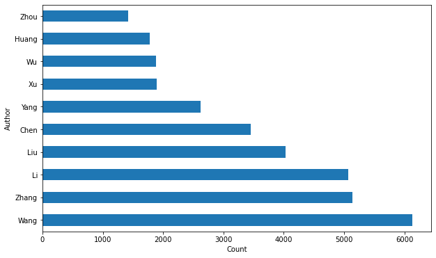

DW21期数据分析方向
任务主题：论⽂文作者统计，统计所有论⽂文作者出现评率Top10的姓名；任务内容：论⽂文作者的统计、使⽤用 Pandas 读取数据并使⽤用字符串串操作； 任务成果：学习 Pandas 的字符串串操作
知识前导
数据处理
python调用print(‘字符串’)检查转义字符
print(r”字符串”)停止检查字符处理
说白了就是切分字符串,建议访问https://www.cnblogs.com/lvtaohome/p/11215954.html
markdown换行技巧
空两格回车,快速普通换行两下回车段落式换行
编程语言中为什么设置\t
不同机器中
Tab键产生的空格数是不一样的;因此设置\t,根据当前计算机的设定,选定适应当前环境的空格数.python中string变量的内置函数
必须夸夸
python,比C++啥的强太多了,基本上你都不需要写函数,只需要明白这个函数能干啥,正确的参数是啥.
练习部分补充代码
勘误:原文2.3字符串处理有一个例子
print(“var2 [1:5]: “, var2 [0:7])
代码切的是a部分,结果输出了b部分,很容易误导新手
1 | #以下时字符串切片的补充代码,可以略过 |
handsome boy.
smart任务1日常搭建环境
1 | #写程序第一件事干什么,相信不用我再说了吧 |
对原文改进
data = [] with open("arxiv-metadata-oai-snapshot.json", 'r') as f:
for **idx,** line in **enumerate(f)**:
d = json.loads(line)
d = {'authors': d['authors'], 'categories': d['categories'],\
'authors_parsed': d['authors_parsed']}
data.append(d)
data = pd.DataFrame(data) 我想说明的是第二行不用enumrate函数照样能用,而且减少了多余的操作
1 | data = [] |
1 | data |
| authors | categories | authors_parsed | |
|---|---|---|---|
| 0 | C. Bal\'azs, E. L. Berger, P. M. Nadolsky, C.-... | hep-ph | [[Balázs, C., ], [Berger, E. L., ], [Nadolsky,... |
| 1 | Ileana Streinu and Louis Theran | math.CO cs.CG | [[Streinu, Ileana, ], [Theran, Louis, ]] |
| 2 | Hongjun Pan | physics.gen-ph | [[Pan, Hongjun, ]] |
| 3 | David Callan | math.CO | [[Callan, David, ]] |
| 4 | Wael Abu-Shammala and Alberto Torchinsky | math.CA math.FA | [[Abu-Shammala, Wael, ], [Torchinsky, Alberto, ]] |
| ... | ... | ... | ... |
| 1796906 | R. Prozorov, M. Konczykowski, B. Schmidt, Y. Y... | supr-con cond-mat.supr-con | [[Prozorov, R., ], [Konczykowski, M., ], [Schm... |
| 1796907 | Durga P. Choudhury, Balam A. Willemsen, John S... | supr-con cond-mat.supr-con | [[Choudhury, Durga P., , Physics Department, N... |
| 1796908 | Balam A. Willemsen, J. S. Derov and S.Sridhar ... | supr-con cond-mat.supr-con | [[Willemsen, Balam A., , Physics Department,\n... |
| 1796909 | Yasumasa Hasegawa (Himeji Institute of Technol... | supr-con cond-mat.supr-con | [[Hasegawa, Yasumasa, , Himeji Institute of Te... |
| 1796910 | Naoki Enomoto, Masanori Ichioka and Kazushige ... | supr-con cond-mat.supr-con | [[Enomoto, Naoki, , Okayama Univ.], [Ichioka, ... |
1796911 rows × 3 columns
1 | #实验enumrate()功能 |
任务2数据处理
1 | #又到了很抓的数据处理环节 |
主线1用直方图列出19年以来发表数最多的10人
1 | author_names = [' '.join(x) for x in all_authors] #join()链接函数 |
Text(0.5, 0, 'Count')
对原文改进
原文
authors_lastnames = [x[0] for x in all_authors]
authors_lastnames = pd.DataFrame(authors_lastnames)
plt.figure(figsize=(10, 6))
authors_lastnames[0].value_counts().head(10).plot(kind='barh') names = authors_lastnames[0].value_counts().index.values[:10]
_ = plt.yticks(range(0, len(names)), names)
plt.ylabel('Author') plt.xlabel('Count') 我想说明的是不用加粗无缩进的两行照样能用
我不清楚这两行的意义在哪里,后面根本没有调用names和_
主线2直方图列出发表数最多10人的姓
1 | author_lastnames = [x[0] for x in all_authors] |
Text(0.5, 0, 'Count')感悟
- 使用markdown更得心应手了
- 基本上流程懂了
- python用起来更轻松啦
- 最近还打算在github上搭建博客
- 我爱开源